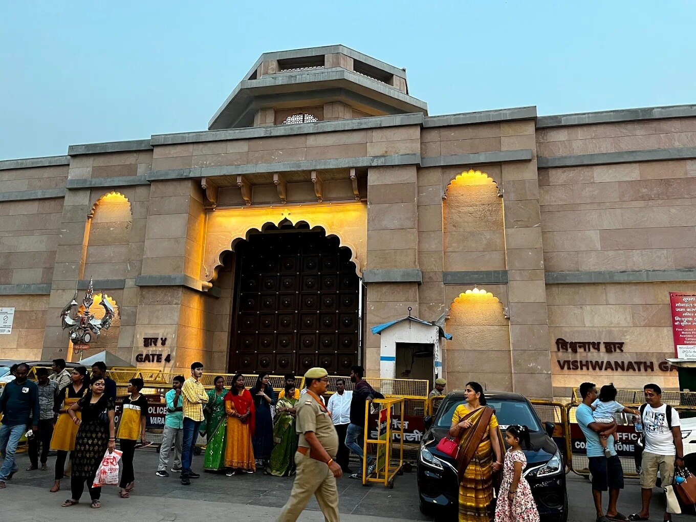
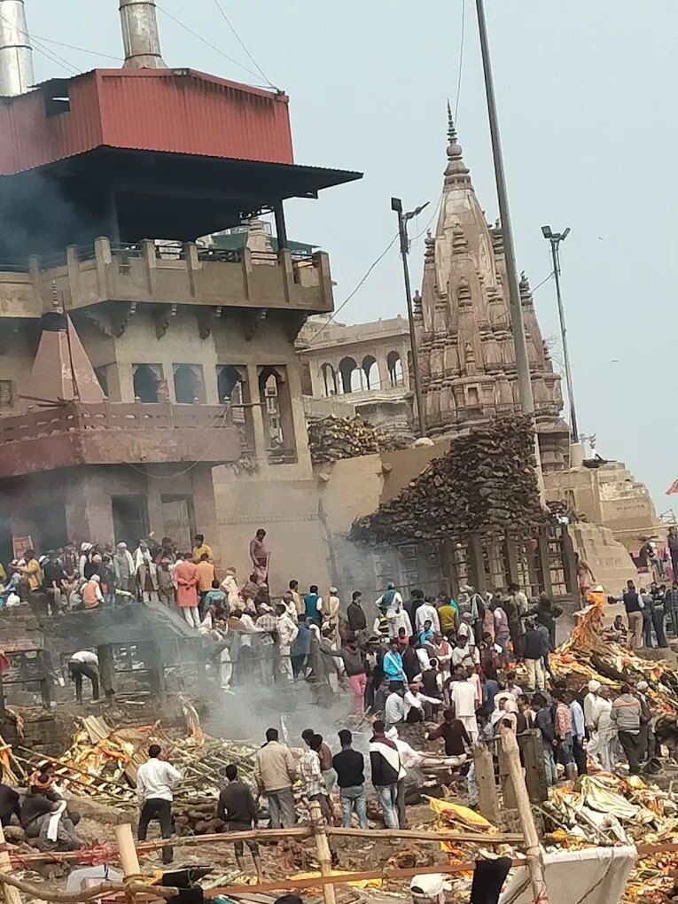
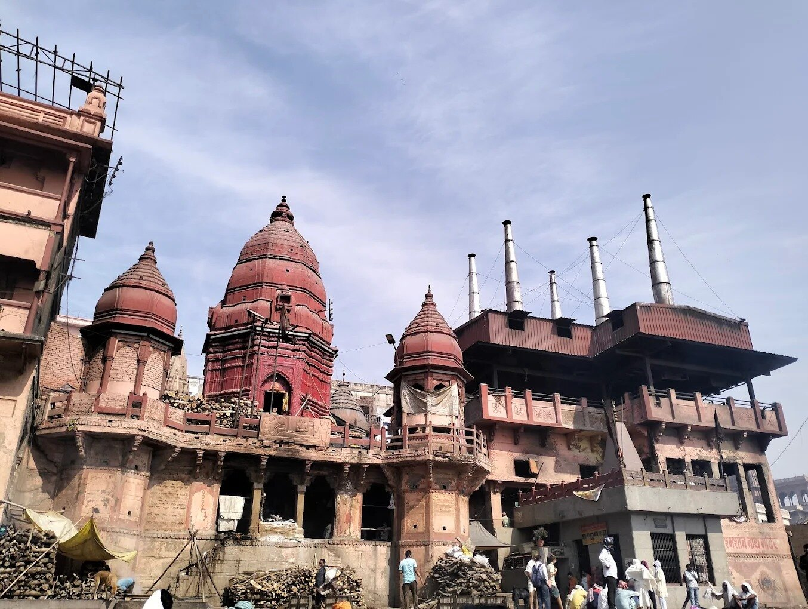
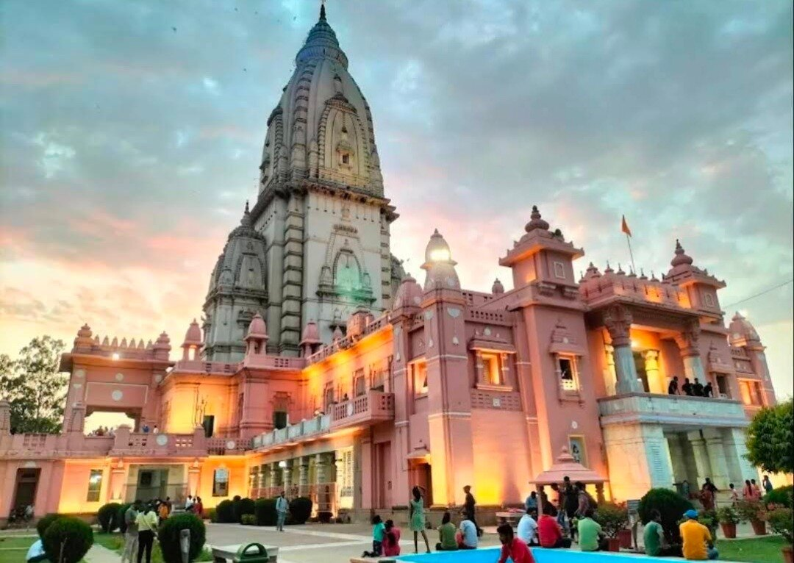

KASHI · RIVERFRONT
Temple above the river
The skyline of Kashi rises directly from the Ganga.
THE VISUAL YATRA
Move through Kashi and nearby sacred destinations at an unhurried pace. Open any image fullscreen and let Bhairavi accompany the journey.
The skyline of Kashi rises directly from the Ganga.

A close view of the sacred heart of the city.

Pilgrims gather before entering for darshan.

The riverfront preserves layers of royal and sacred history.

Riverfront steps glow as the evening settles.

A powerful place approached with respect and context.

Every facade adds another layer to the city.

Palaces and mansions speak of Kashi's many patrons.

A spacious, calmer part of a complete Kashi journey.

A place of stillness where the Buddha gave his first sermon and the Dharma wheel began to turn.

At Triveni Sangam, pilgrimage gathers around the sacred meeting of rivers.

Temple, river and Ramayana memory shape the sacred atmosphere of Ayodhya.